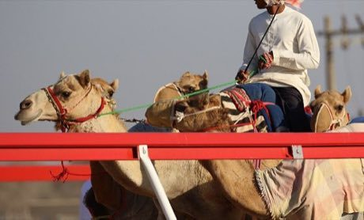
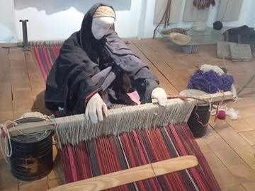

Home / Crossroads and Golden Ages / Mesopotamia, Levant and Arabia
Playable heritage gameCamel racing dash
Also known as Sibaq al-hajin (Arabic)
In the open desert of southern Jordan, owners and riders race long-legged camels bred for speed over a sandy track. A camel gives only so much strength: those who gallop too soon are passed on the last stretch.


How to play
- Hold the pad to let your camel gallop, and let go to ease it into a trot.
- Strength falls while it gallops and returns while it trots.
- Tap on the stride, as the ring closes, to call it into a short burst of speed.
- Keep something in hand for the final stretch.
Rules at a glance
- Two heats; your score is the average of both.
- A tired camel slows right down until it has rested.
- A call off the stride only unsettles the animal and uses strength.
- Soft sand slows everyone, and a light headwind blows along the track.
- The animal is never struck: it answers only to the voice and the pace you keep.
About the tradition
Racing camels, called hajin, have been bred by Bedouin families of Jordan and the Arabian peninsula for speed and stamina, and races mark gatherings and festivals, notably in the Wadi Rum area. Good care of the animal comes before any prize.
Origins
Usually placed in the era of Crossroads and Golden Ages (about 500 to 1500), although its exact origins are uncertain, within the cultural world of Mesopotamia, Levant and Arabia.
Credits
- Game design: World Heritage Games (original)
- Photo: Lintophilip (User), CC BY-SA 4.0, source on Wikimedia Commons
- Text: CC BY-SA 4.0, World Heritage Games.
Sources

Get the app
Camel racing dash is one of 18 sports and skill games in the Sports & Skill of the World app for iPhone, iPad and Android. Submitted to the App Store and Google Play; in review. Store links appear here the day it goes live. One app, many traditions, no account needed.
More games to play

Sahel Salt Caravan
Niger +1 · Sports with animal partnersPlay preview · in the Story & Theatre of the World app
Mijwiz Double Clarinet
Lebanon +3 · Musical instrumentsPlay preview · in the Music & Dance of the World app
Buzuq Long-Neck Lute
Lebanon +2 · Musical instrumentsPlay preview · in the String Music of the World app


More from Jordan

Bedouin Coffee Pour
Jordan · Crafts and making
Jordanian Sand Bottle Art
Jordan · Crafts and making

Sadu Bedouin ground-loom weaving
Jordan · Crafts and making